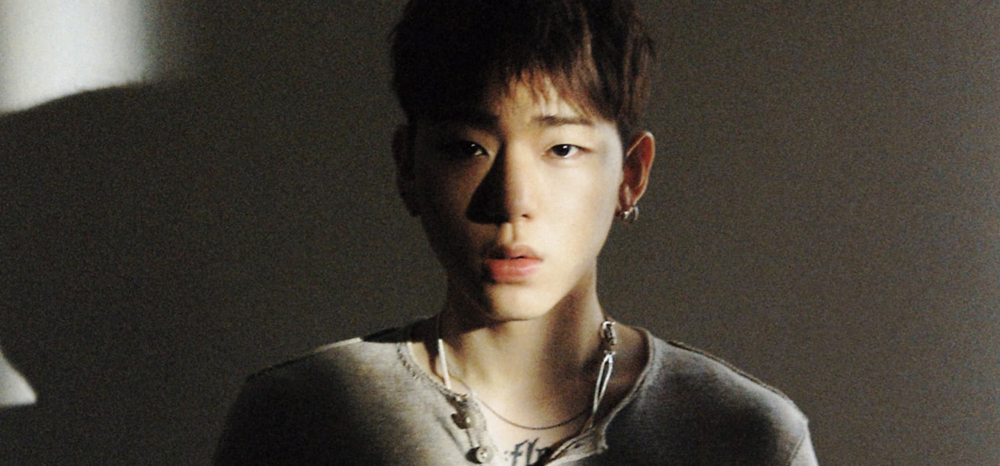

Thinking
Thinking

Who's Artist?
ZICO
- 우지호
- CEO/Producer
- 1992.09.14


Album
Thinking Part.1

Info
| 발매일 | 2019.09.30 |
|---|---|
| 장르 | 랩/힙합 |
| 발매사 | (주)카카오 M |
| 기획사 | KOZ 엔터테인먼트 |
Purchasing


Track List
| 번호 | 곡정보 |
|---|---|
| 1 | 천둥벌거숭이 (Feat. Jvcki Wai, 염따) |
| 2 | 걘 아니야 |
| 3 | 사람 |
| 4 | 극 |
| 5 | One-man show (Feat. Sik-K) |
Thinking Part.2

Info
| 발매일 | 2019.11.08 |
|---|---|
| 장르 | 랩/힙합 |
| 발매사 | (주)카카오 M |
| 기획사 | KOZ 엔터테인먼트 |
Purchasing
Track List
| 번호 | 곡정보 |
|---|---|
| 1 | another level (Feat. 페노메코) |
| 2 | 남겨짐에 대해 (Feat. 다운) |
| 3 | Dystopia |
| 4 | Balloon |
| 5 | 꽃말 (Feat. 제휘) |
Songs
Part.1
천둥벌거숭이 (Feat. Jvcki Wai, 염따)

그래서 어떻게 됐긴 어디도 안 가고 내가 차린 회사랑 도장 찍었지 빠른 페이스로 개체 수 불려나가 우린 치타보다 몇 배나 민첩한 코끼리 헛바람 든 것처럼 보여도 가만 내비 둬 그건 열풍을 만들겠단 소리 거드름 피우던 힙스터의 꿈은 아이돌 출신이 주는 합격 목걸이 자신감에는 근거가 넘쳐 과다 분비되고 있어 세로토닌 계산 잘 하고 테이크 다운 걸어 내게 손 뻗치면 결국 KOZ Z 세대 이제 내 시대로 엔터 몇 군데는 셔터 내려 유명세는 삽시간에 fade out 스냅 댄스 테크토닉이 가까운 예야 사실 이번 트랙 좀 가볍게 풀어갈 생각이었는데 계획이 바뀌었네 한 음절도 허투루 쓸 수 없지 스윽스윽 지우고 고쳐쓰기를 반복해 아예 아예 Stop being a doormat 법인 대표답게 영리해야만 해 Saucin saucin Remaking history 벌써 사무실로 성지순례 오지 먹구름 깔아놔 저 무지개 위에 가랑비로 너희들 가랑이를 적실게 난 돈벼락 맞고 바짝 정신 차린 케이스 우르르 쾅쾅 마른하늘이 무너져 yeah They call me 천둥벌거숭이 They call me 천둥벌거숭이 겁대가리 상실한 젊은이 절대 못 고쳐 내 버르장머리 They call me 천둥벌거숭이 They call me 천둥벌거숭이 잘 가라 어중이떠중이 어떤 무리에 있든 난 우두머리 Tupac 만큼 누가 리얼하든 감흥 없어 GG 치고 이제 난 이 게임을 던져 그러니까 제발 나를 좀 내버려 둬 통장 잔고 보며 잠시 행복해져 Ali처럼 날아서 나비 효과 수퍼비처럼 맞았어 돈벼락 이제 나는 뭣도 신경 쓸 필요가 없다는 걸 너네 왜 아직도 몰라 돈 낳는 말이야 돈을 낳는 말이야 대체 그게 무슨 말이냐 하면 랩만 해서 잉태 내 뱃속 안에 새 지폐 아들은 세종대왕 딸내미는 사임당 도대체가 그게 뭔 개소리냐고 하면 뱃속 안에 새 지폐 내 손안으로 직행 I mean I mean I’m way too blessed I mean I’m way too blessed I dk why but I’m too blessed I dk why but I’m too blessed I mean I’m way too blessed I mean I’m way too blessed I dk why but I’m too blessed I dk why but I go ahead 먹구름 깔아놔 저 무지개 위에 가랑비로 너희들 가랑이를 적실게 난 돈벼락 맞고 바짝 정신 차린 케이스 우르르 쾅쾅 마른하늘이 무너져 yeah They call me 천둥벌거숭이 They call me 천둥벌거숭이 겁대가리 상실한 젊은이 절대 못 고쳐 내 버르장머리 They call me 천둥벌거숭이 They call me 천둥벌거숭이 잘 가라 어중이떠중이 어떤 무리에 있든 난 우두머리 염따는 토르 성공의 망치를 얻네 칙칙한 내 지갑에도 쾅 노력의 번개를 내렸네 난 이제 위대한 사랑이 빨리 필요해 마치 재키 재키 사주고 싶어 오천만 원짜리 머리통만한 반지 그치 그치 시간은 온다고 괜찮아 아프면 더 울어 따거는 정답을 알어 재키는 blessed 재키는 blessed 안 소중한 사람 없네 우리는 살아야 돼 I'm way too flex 먹구름 깔아놔 저 무지개 위에 가랑비로 너희들 가랑이를 적실게 난 돈벼락 맞고 바짝 정신 차린 케이스 우르르 쾅쾅 마른하늘이 무너져 yeah They call me 천둥벌거숭이 They call me 천둥벌거숭이 겁대가리 상실한 젊은이 절대 못 고쳐 내 버르장머리 They call me 천둥벌거숭이 They call me 천둥벌거숭이 잘 가라 어중이떠중이 어떤 무리에 있든 난 우두머리
걘 아니야
크게 한판 했네 또 마음은 착한 아이라며 bullshit 다시 만난다 할 때부터 왠지 느낌이 쎄하긴 했어 Listen 다투는 거 까진 okay 문제는 지금이 몇 시 게 메시지 확인해서 뭐해 걘 백 프로 게임 중일 텐데 Something is wrong 여기 있는 너도 책임이 커 얘기 안 끝났어 앉아 Actually 이젠 정말 헤어졌으면 좋겠어 잠깐 말고 정식으로 한 쪽만 손해 본 걸 Honestly 애초에 네가 천만 배는 아까워 거짓말 좀 보탰어 암튼 간 걘 아니야 휘둘리고 있네 또 꼭 짚고 넘어간다며 foolish 넌 어물쩍 화해해 버리곤 항상 코앞에서 포인트를 놓쳐 기념일 건너뛰고 지 술 모임엔 꼬박꼬박 출석하지 과한 style 질색하는 넌데 로고 박힌 명품 주는 건 무슨 깡인지 SoundCloud에 추가된 트랙들 구독 중인 YouTube 채널만 봐도 이 조합은 오래 못 가 Actually 이젠 정말 헤어졌으면 좋겠어 잠깐 말고 정식으로 한 쪽만 손해 본 걸 Honestly 애초에 네가 천만 배는 아까워 거짓말 좀 보탰어 암튼 간 걘 아니야 암튼 간 걘 아니야 암튼 간 걘 아니야 Stop hesitating you choose 환승할 때야 슬슬 멀리 가서 찾지 마 굳이 등잔 밑에 누가 있는지 확인해 어서 자꾸 산통 깨서 미안한데 사실 좀 고마워 녀석한테 말 나온 김에 그냥 고할게 You’re the one you’re the one You’re the one that I want Actually 애초에 너랑 친구 먹기 싫었어 못 들은 척 넘기지 마 좋아한단 말이야 암튼 간 걘 아니야 암튼 간 걘 아니야
사람
다를 거 없이 하찮은 하루 유독 좋은 일만 피해 갔구나 어릴 적 그림 속 어른이 된 난 분명 기쁜 표정이었는데 한 평생이 오늘까지면 발길을 돌릴 곳이 있나요 멋쩍다는 이유로 미루었던 사랑해란 말을 너에게 건네줘 right now 고개를 자꾸 떨구게 돼 요즘엔 마지막으로 하늘을 본 게 언젠지 흐릿해진 세상은 먼지투성이네 나 같은 사람들이 발버둥 쳤기 때문에 yeah We always say 나중에 그 나중에를 위해 건너뛴 생일을 빼면 여태 난 십 대 철들수록 부쩍 상상이 두려워 미끄럼틀도 서서히 비탈길로 보여 낯선 친절은 의심 가 뻔한 위로가 더 기운 빠져 화기애애한 대화창 속 넌 정말 웃고 있을까 거리낌 없이 아무 데나 걷기엔 피해야 될 것이 너무 많은 곳에서 태어날 때나 늙어갈 때 움츠린 채 사는 우리 다를 거 없이 하찮은 하루 유독 좋은 일만 피해 갔구나 어릴 적 그림 속 어른이 된 난 분명 기쁜 표정이었는데 한 평생이 오늘 까지면 발길을 돌릴 곳이 있나요 멋쩍단 이유로 미루었던 사랑해란 말을 너에게 건네줘 right now 조심해 시간은 무섭게 속력을 낼 거야 넘어지지 않게 서로 손잡이가 되어줘 개인이 할 수 있는 일은 실망밖에 없어 터질 듯 쌓여버린 이야기보따리를 풀어 삶은 교묘한 장난을 안 멈춰 uh 네가 공짜로 생명을 얻은 날부터 UH 우선시되는 무언가에 늘 묻혀있지 행복은 화려한 꽃밭 틈에서 찾는 네 잎 클로버 나쁜 마음씨를 들킬까 너 나 할 것 없이 눈치 봐 걱정 마 좀 부족해도 누군가는 인간다움을 느껴 남의 눈에 좋은 사람이기 전에 나 자신한테 먼저 화해를 청해 어렵다는 거 모두가 알아 이번이 처음 살아 보는 거잖아 다를 거 없이 하찮은 하루 유독 좋은 일만 피해 갔구나 어릴 적 그림 속 어른이 된 난 분명 기쁜 표정이었는데 한 평생이 오늘 까지면 발길을 돌릴 곳이 있나요 멋쩍단 이유로 미루었던 사랑해란 말을 너에게 건네줘 right now We're the same We're the same We're the same people Are you happy are you sad Why is it so hard to be loved We're the same We're the same We're the same people Are you happy are you sad We need love
극
수많은 곡 수많은 욕 수많은 호응 수많은 정적 수많은 편 수많은 적 수많은 도움 수많은 거절 수많은 업적 수많은 편견 수많은 존경 수많은 동정 수많은 환영과 수많은 차별 변수 많은 일 자랑스러워할 수만은 없지만 뭐 깊숙이 발 담갔지 무릎 아랜 앞다퉈 날 물어뜯는 닥터피시 나도 한땐 미꾸라지 이제 먹이사슬의 피라미드를 조각 케이크처럼 먹어 치운 다음 용트림 무슨 시계를 찼냐 보다 시간을 어떻게 쓰냐가 중요 네가 뜸 들이는 동안 난 가사 한자 한자에 공을 들여 쇼핑은 접은 지 꽤 됐어 내 아웃핏 대부분 증정 지출이 있다면 지인들 선물 또는 직원들 급여 거듭 실망할 걸 안티들은 내 인터뷰나 다큐멘터리만 봐도 양아치완 거리가 멀어 우지호의 실제 품행 누리꾼의 궁예 지코는 인격이 두 개 so what 난 아이돌이었다 래퍼였다 호감이었다 비호감이었다 극과 극 어느 축에도 못 껴 일 년에 한 번꼴로 사망했다 부활해 Am I ghost Am I zombie 남은 건 혼 아니면 몸 내 겉멋 든 신인 시절 섣부른 기믹이 어중된 이미지를 형성시켰으니 So sometimes I regret it 구설수 올라 매일 아마 낙하지점은 차가운 맨땅일 테지 ha ha ha high risk high return U turn 할까 주춤대다 D로 맞춰 기어 혹독히 치러 이름값 위기 닥쳐도 넘치지 위트가 치고 박아 안전 장치 없이 맷집 키워가 never die 우여곡절 끝에서 황홀경을 느끼네 후렴구는 생략했어 나머진 맡길게 네 생각에
One-man show (Feat. Sik-K)
조명 대신 음소거된 TV 협탁엔 찌그러진 캔이 넌 허술한 핑곗거리를 대고 다급하게 옷을 챙기지 도어락이 닫히면 곧바로 사색에 잠겨 God damn it 서로를 발가벗기며 한 번도 솔직한 적 없던 밤 불장난치는 쿨한 사이 현타가 와 이 온도 차이 비슷한 처지가 있는지 괜히 검색해 정색해 그날 만약 맨 정신에 커피를 마셨음 얘기가 많이 달라졌을까 내 기분은 더 이상 Enjoy 하지 않아 어차피 우린 첫 단추부터 Fucked up 됐어 어쩌겠어 난 빌어먹을 침대보다 안정감을 줄 수 있다고 yo I think there is no other way 말했잖아 보고 싶음 네가 나한테 오면 안 되니 yeah 또 난 아무것도 아니었단 생각들이 가득 차 괜히 네가 누군갈 기다리는 것처럼 나도 너를 waitin’ 너도 나랑 똑같아 혼자만 생쇼하는 건 이 멍청아 부딪쳐서 spark만 팍 튀는 사이 네 입맛에 안 당기는 스타일 밀어는 내도 안 당기는 사이 팔랑 귀에 팔랑 귀를 가지니깐 너 포함 너의 지인 다 구분하겠지 내 감정 대놓고 넌 휩쓸리다가 나를 곧 놓쳐 나도 싫어 슬픈 결말 연기라도 해 줘 sometime 내 기분은 더 이상 Enjoy 하지 않아 어차피 우린 첫 단추부터 fucked up 됐어 어쩌겠어 난 빌어먹을 침대보다 안정감을 줄 수 있다고 yo I think there is no other way 네 사소한 드립에 매일 오만가지 해석을 해 야 이 미친 새끼야 정신 차려 혼잣말이 버릇돼 난 내용물도 없는 판도라의 상자를 두고 열지 말지 몇 달째 제자리 ah shit 제대로 만나보자고 강수를 두려다가도 보조출연자 대사가 얼마나 임팩트 있겠냐고 난 싸이월드 시절도 이 정도 감성충은 아녔어 당장은 아니라 바뀔 수 없지만 사랑하게 됐나 봐 이쯤에서 끝내자 사귄 적도 없는데 후폭풍이 걱정돼 어떡해 쪽팔림 감수하면서 원맨쇼 하는 것도 지쳐 I think there is no other way
Part.2
another level (Feat. 페노메코)
Another level We're on another level Another level We're on another level Another level We're on another level Another level It's a whole new level 그샐 못 참고 또 사서 개고생 10년 전의 랩 지망생 back again 대단한 거 하나 없지 대표 돼도 맨날 퇴짜 맞아 동명의 상사 새끼한테 켜자마자 싱겁게 끝판을 깬 게임이야 다음 플랜은 게임 체인저들의 게임 체인저 인간계에서 하는 트랩 그게 나의 bad behavior 잠깐 자리 비운 새 여기 player들 해이해졌어 다 난 모범을 보여 오늘 게스트는 GooseBumps 우린 초면부터 졸라 쩌는 비트를 뚝딱 추석에도 불구하고 난 슬럼프에도 불구하고 두어 곡을 추가로 내 지적 재산 끌어다 써 Check out why don't you just back off 폼은 계속 최상위 엔간해선 트렌드 하지 yeah 온갖 외압은 가뿐히 생까 텐션 오를 땐 상의 필요 없어 like Jay Park 전부 쓸어 담자고 전 세계의 paper bills 상상력은 무한 한입 베어 물자 galaxy 도착지는 이미 다음 행성에 yeah 우린 완전히 다른 차원에 yeah 이건 another level 이건 another level 완전 another level 완전 another level 이건 another level 이건 another level 완전 another level This gon’ be your new bible 넌 앨범 통틀어도 못 미쳐 내 한 Verse 한 줄에 노력이 가상해서 평가하기 좀 거시기하네 한 철 장사치 줄줄이 밑천 드러날 때 슬쩍 떡밥 몇 개 던져 모두 먹방 개시 Make it hot 불조심 앗뜨앗뜨 흘러 비지땀 안 차 ice 몸에 닿았다 혹 녹아내릴까 괜찮아 난 대형 스타이긴 해도 twinkle twinkle 딱밤으로 깨지 소포모어 징크스 징크스 으이그으이그 지금이나 먹히지 그걸 나중에 어디다 갖다 써 한 수 가르쳐 주지 패기와 관록의 미친 강약 조절 여긴 일찍 상황 종료 빠빠빠빨리 왕관 넘겨 방방곡곡 쑤셔 넌 뒤에서 발만 동동 우 My first name is Woo 자식 셋을 낳으면 우수 우위 우월 지아코 what 그는 대체 무엇 The world is unequal you screwed up 전부 쓸어 담자고 전 세계의 paper bills 상상력은 무한 한입 베어 물자 galaxy 도착지는 이미 다음 행성에 yeah 우린 완전히 다른 차원에 yeah 이건 another level 이건 another level 완전 another level 완전 another level 이건 another level 이건 another level 완전 another level This gon’ be your new bible 이건 another level 이건 another level 완전 another level 완전 another level 넌 언제까지 그따구로 할 거야 랩을 I'll show them 한 번도 구경 못 해본 레이블
남겨짐에 대해 (Feat. 다운)
요즘 따라 시간이 이상해 헤어진 날에서 며칠째 살아 나지막한 바람 창틈으로 새면 네 숨결이 닿을 것 같아 끝내 읽히지 못한 편지 한 장 포장째 시들어 버린 꽃 한 다발 내가 받아 본 것 중 가장 비참했던 이벤트 계절은 봄을 데리러 갔지만 난 지난번 겨울 끝자락에 남아 천천히 배웅하려고 해 잘 가 잠깐 내가 붙여준 별명들 사사로운 네 기쁨 슬픔까지 이제 내 것이 아닌 거네 난 무사할까 감히 혼자서 요즘 따라 시간이 이상해 헤어진 날에서 며칠째 살아 날 지긋이 보는 까만 밤 하늘이 네 눈동자를 닮았어 고개만 돌려도 만날 수 있었는데 눈 감아야 겨우 보일 듯해 얼마나 환했으면 이토록 찡그리는 걸까 그동안 내 흔적을 몇 개나 발견했니 문득 떠올라도 그가 볼까 봐 딴청 했니 기억은 잊혀질 때가 돼서야 뚜렷한 형상을 하고 앞을 지나쳐 가 보름 내내 날 간호해 줬을 때도 재미 삼아 결혼 날짜를 꼽아볼 때도 넌 계속 마지막을 준비 해왔나 봐 영혼 없이 영원만 들먹인 이 머저리한테서 어떻게 된 게 두근거림이 전보다 심해졌어 설레임 보단 조바심이 생겨서 넌 우릴 내려놓았고 난 미처 몰랐지 이유와 잘못을 찾는 내가 그 이유와 잘못인 걸 요즘 따라 시간이 이상해 헤어진 날에서 며칠째 살아 구차한 거 맞아 안 떠난다는 말 나 혼자라도 지킬게 메시지 창엔 여전히 화목한 대화가 남아있어 엄지 손에 한때 흘린 너의 눈물 자국이 남아있어 그만 가봐야 된다는 너의 마지막 목소리가 남아있어 아직도 모든 게 제자리에 남아있어
Dystopia
Why do I have so much trouble 삶은 멀쩡한 날개를 꺾고 대신 십자가를 쥐여줬어 한 발자국에 숨이 가빠 Nobody knew my existence I’ll never regret what had happened 난 불모지에서 뿌리를 내렸고 눈보라 칠 때 열매를 맺었어 괴물을 꺼내지 않으면 이 테스트를 끝내지 못해 평생을 동굴 안에 갇힌다면 you choose light or dark 편하게 박쥐로 남던가 처음엔 주변을 밝힐 만한 양초를 찾다 불을 손에 넣자 꺼내 들어 다이너마이트 인간은 다 기회보다 앞서간 자의 머리챌 잡아 구원의 손길을 원하는 자여 먼저 그 손에 반지부터 빼 I can’t defend 있다가도 없을 환영에 취해 또다시 파란 구슬 위에서 위태로이 곡예를 부리네 여긴 어디 Why am I here Dystopia 올가미를 던지곤 말해 그게 네 유일한 구명 밧줄 목표치로 삼은 높이만큼 거꾸로 묻혀 봐 어둠과 빛이 정신없이 오고 갔지 yeah 수년간 나의 존재를 계속 깜빡하는 이유였나 Do you see what I mean 여기는 날 벼르는 새끼들 천지 고통에 무뎌 두려움을 스릴로 느끼지 Safety frigidity 현실주의자의 hyperreal 허구처럼 살아 허구한 날 ha 배춧잎으로 배를 채워 becoming vegan 갈증 안 가실 땐 독극물 삼키고 hiccup 선악과를 따서 입가심으로 씹어 저마다 입속에 뱀을 한 마리씩 키워 huh 손사래 치면 불행은 멀리서 달려와 High Five 하고 피식 히죽여 No peace for the wicked no more love 조심히 발 디뎌 봤자 덧없어 I can’t defend 있다가도 없을 환영에 취해 또다시 파란 구슬 위에서 위태로이 곡예를 부리네 여긴 어디 Why am I here Dystopia Why do I have so much trouble 삶은 멀쩡한 날개를 꺾고 대신 십자가를 쥐여줬어 한 발자국에 숨이 가빠 Nobody knew my existence I can die inside if heaven were black Where my feet stand there's no place to rest Can't erase the pain with a smile on it Could you save me from myself
Balloon
하루쯤은 높이 뜨고 싶어 주눅 든 내 몸을 부풀려 딱히 바라던 색깔은 없어 아무 틈에나 껴 있으면 그만이야 커질 대로 커져 버렸는데 속에 든 거라곤 몰래 삼킨 한숨 내일 난 얼마큼 사라질까 둥글게 둥글게 대충 넘어가 쌩 하늘을 날아가는 듯 바람에 떠밀려 가는 무기력한 존재를 그댄 실수로 놓친 건가요 일부러 띄운 건가요 대답할 필요는 없어요 가끔 세게 안겨 보고 싶어 나 좀 미리 터트려 주라 모서리로 빼곡한 세상은 누군가 당장 추락하기를 바랄걸 떠들썩한 파티가 끝나면 조각난 채로 버림받을 거야 거꾸로 솟는 눈물방울아 둥글게 둥글게 다시 돌아가 쌩 하늘을 날아가는 듯 바람에 떠밀려 가는 무기력한 존재를 그댄 실수로 놓친 건가요 일부러 띄운 건가요 대답할 필요는 없어요
꽃말 (Feat. 제휘)
까닭 모를 축하 소리에 떠밀려 옅은 웃음 짓네요 도망 나오고 싶죠 나만 없는 곳으로 나는 어째서 나인 걸까 지칠 땐 날 향해 쓰러지세요 얼마든 함께 아플게요 영원한 건 그 어디에도 없어요 눈물로 놔두면 물결 돼 사라지죠 자신에게 늘 다정하지 못한 너를 대신 내가 사랑해줄게요 어느덧 내 존재의 절반이 너로 변했기에 그 슬픔을 이해합니다 평소를 되찾고 하늘이 개면 못다 한 행복을 나눠요 영원한 건 그 어디에도 없어요 눈물로 놔두면 물결 돼 사라지죠 자신에게 늘 다정하지 못한 너를 대신 내가 사랑해줄게요 대신 내가 떠나질 않는 우울한 마음의 조용한 장난이 멈출 때까지 이 자리를 지켜요 옷깃을 억지로 여미지 말아요 쌀쌀한 세상에 모닥불을 피울게 봄기운 돌고 포근해진 네 손 위로 한 아름 꽃 놓여 있을 거야 그 꽃말은 우리를 사랑해